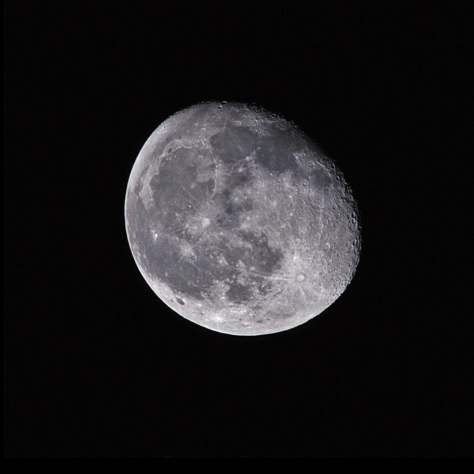
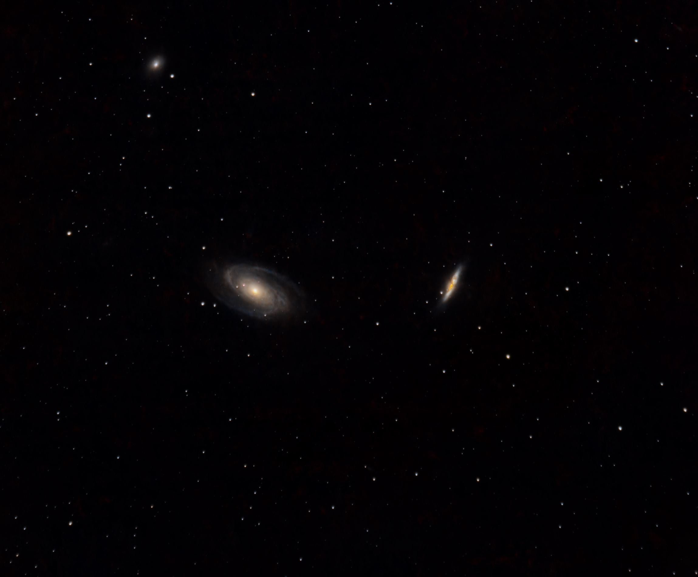

The Moon
March 20, 2022
An amateur’s view of the night sky
“Seeing is in some respect an art, which must be learnt.”
I’m Jackson, an amateur astrophotographer based in Auburn, Alabama. An interest in astronomy led me toward engineering—and, in 2021, to learning how to photograph the night sky.
Explore the Portfolio
Featured Work
From the familiar surface of the Moon to the gas and dust of distant nebulae.
View full portfolioEarly experiments in exposure, focus, tracking, composition, and image processing from my first months learning astrophotography.